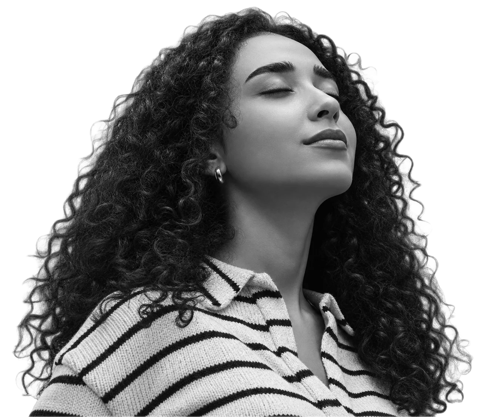
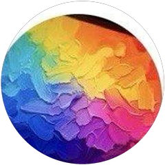
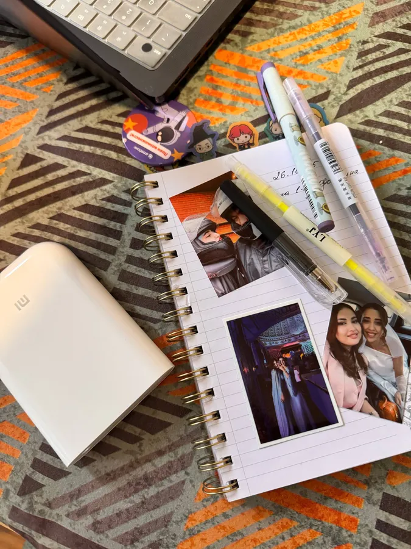
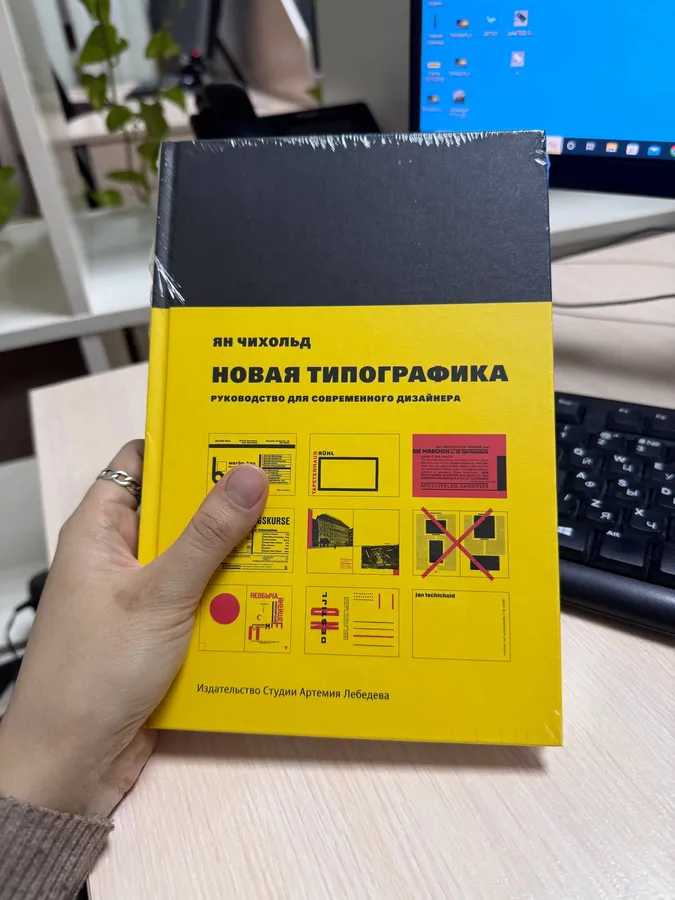

Привет, я МадинаHi, I’m Madinaпродуктовый дизайнерa product designer
Разбираюсь в сложных системах и стараюсь оставлять их сложность внутри продукта, а не на экране пользователя.I get to the bottom of complex systems and try to keep their complexity inside the product, not on the user’s screen.
Финансовый университет при Правительстве РФ, магистратура с красным дипломомFinancial University under the Government of Russia, master’s with honours
Веду два канала: Earworm и «Дезигнер»I run two channels: Earworm and Дезигнер

Нажмите на документ, чтобы открыть его крупноClick a document to open it full sizeПроектирую сложные продуктыI design complex products
Я продуктовый дизайнер. Работаю над личными кабинетами, админ‑панелями и мобильными приложениями в финтехе, B2B и B2C: от исследования и пользовательских сценариев до интерфейса и дизайн‑системы.I’m a product designer. I work on personal accounts, admin panels and mobile apps in fintech, B2B and B2C: from research and user flows to the interface and the design system.
В дизайн я пришла из банка, поэтому хорошо вижу процессы за экраном: где люди ошибаются и что приходится объяснять по телефону. Это помогает убирать из интерфейса лишнее и делать сложное понятным.I came to design from a bank, so I see the processes behind the screen: where people make mistakes and what has to be explained over the phone. That helps me cut what’s unnecessary and make complex things clear.
- Alif BankUX/UI дизайнерUX/UI designerс апреля 2022 по июнь 2024April 2022 to June 2024
- Foreesco GroupПродуктовый дизайнер, мобильные B2C‑приложенияProduct designer, B2C mobile appsс февраля 2024 по март 2025February 2024 to March 2025
- Профинанс / FIBO GroupПродуктовый дизайнерProduct designerс июня 2024 годаsince June 2024
Сложная схема становится сценариемA complex scheme becomes a flow
Больше всего я люблю момент, когда большая схема с ролями, статусами и исключениями превращается в понятный сценарий.My favourite moment is when a big scheme of roles, statuses and exceptions turns into a clear flow.
Мне близки задачи, где нужно не просто нарисовать экран, а разобраться, как устроен продукт, выбрать главное и убрать из интерфейса всё, что пользователь не обязан держать в голове.I like tasks where drawing a screen isn’t enough: you have to understand how the product works, pick what matters and remove everything the user shouldn’t have to keep in mind.
«Если интерфейс приходится долго объяснять по телефону, у дизайна ещё есть работа»“If an interface takes a long phone call to explain, the design still has work to do”
Финансовый университет, красный дипломFinancial University, with honours
В 2025 году окончила магистратуру Финансового университета при Правительстве РФ по направлению «Управление персоналом» с красным дипломом.In 2025 I graduated with honours from the master’s programme in HR management at the Financial University under the Government of Russia.
До этого окончила бакалавриат МГУ имени М. В. Ломоносова по направлению «Государственное и муниципальное управление».Before that I completed a bachelor’s in public administration at Lomonosov Moscow State University.
Курсы, конференции и программыCourses, conferences and programmes
Мои Telegram‑каналыMy Telegram channels
Часть находок сохраняю в Telegram: в Earworm собираю музыку и личные истории, а в «Дезигнере» держу работы, наблюдения и разборы интерфейсов.I keep some of my finds on Telegram: Earworm collects music and personal stories, and Дезигнер holds my work, observations and interface teardowns.

Дезигнер@rashidenko_tutМои работы, разборы интерфейсов и заметки о профессии.My work, interface teardowns and notes on the craft.
Читать каналOpen the channel Earworm@Earworm_meМузыка, истории и странные совпадения.Music, stories and strange coincidences.
Слушать и читатьListen and readПосле работыAfter work
Переключаюсь на музыку, прогулки, природу и занятия, где не нужно согласовывать финальный макет. Люблю знакомиться с людьми и слушать их истории. Возможно, поэтому интервью остаются одной из любимых частей моей работы.I switch to music, walks, nature and things that don’t need a final mockup sign‑off. I love meeting people and hearing their stories, which is probably why interviews remain one of my favourite parts of the job.


Давайте поговоримLet’s talk
Посмотрите кейсы или напишите мне, если вам нужен продуктовый дизайнер для сложного продукта.Take a look at the cases or message me if you need a product designer for a complex product.